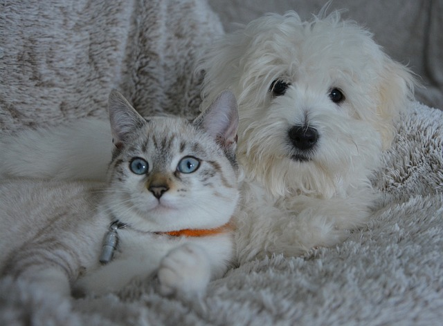

ホーム

かわいいペット“たちが”
心健やか“に過ごせますように”
“症状に合った治療法や健康、”
"飼育相談を行っております。"
特徴について
私たちの特徴
連携病院

複数の動物病院で医療ネットワークを構築しています。24時間夜間救急診療、、大学病院との医療連携を行う事でより最適な医療サービスの提供に努めています。
充実の医療設備

当院ではMRIやCTの導入により正確な検査、診断を行い動物たちが少しでも長く幸せでいられるようにその子に合った治療法を取り入れています。
夜間の時間帯に緊急診療が必要な際は、当院と提携しております
診療実績

整形外科（骨折・脱臼）、腫瘍外科（消化器・肝臓・皮膚などの腫瘍） 、消化器外科（腸閉塞・異物除去）、眼科（緑内障・眼瞼の手術）、ヘルニアなど年間５００症例の手術を行っています。
どうぶつたちのリラックス環境
当院では、猫と犬の待合室を分けるなどなるべくストレスのかからないよう安心して診察ができるように細部まで配慮した環境作りをするなど、動物たちがなるべくリラックスして受診できるように努めています。
::before "はじめての方へ"
FAQ
"下痢や血尿などのトラブルがある場合には、排泄物をお持ちいただくこともあります。来院前にお電話でご確認ください。"